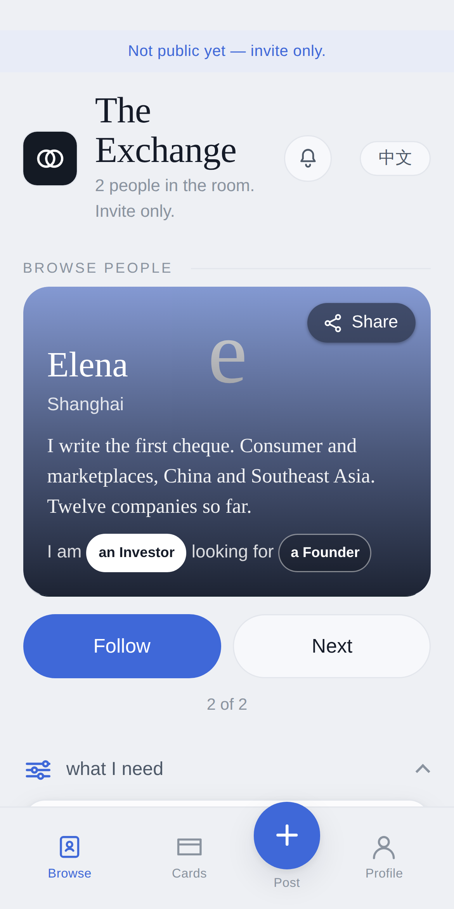

A · The card answers you
You say one line — I am
looking for a Buyer ▾
— and it finds the people who said the other half.
HuiGuangzhou
I ama Buyerlooking fora Manufacturer
FollowB · It fills in the form
You say one line — I am
looking for a Buyer ▾
— and it finds the people who said the other half.

Get on the list as a Manufacturer
Takes them to the form with Trade & factories already ticked.